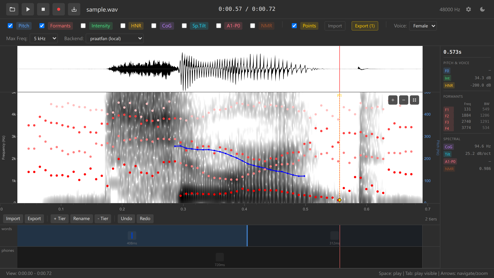

Features Overview
Complete guide to Ozen-web capabilities
Introduction
Ozen-web is a comprehensive browser-based tool for acoustic analysis and annotation. This page provides an overview of all major features with links to detailed documentation.
Core Features
Audio Loading & Recording
Load audio from multiple sources:
- Drag & drop audio files (WAV, MP3, OGG, FLAC)
- File picker dialog
- Microphone recording with real-time visualization
- Remote URL loading (CORS-enabled)
- Data URL embedding for self-contained iframes
Visualization
Waveform Display:
- Real-time amplitude visualization
- Synchronized with spectrogram
- Responsive to zoom and pan
- Efficient downsampling for long files
Spectrogram Display:
- Praat-style grayscale spectrogram
- Adjustable frequency range (5/7.5/10 kHz)
- Dynamic resolution enhancement when zoomed
- Cached rendering for smooth performance
See: Spectrogram Documentation | Waveform Documentation

Acoustic Analysis
Ozen-web provides research-grade acoustic measurements using Praat-compatible algorithms:
Available overlays:
| Feature | Description | Use Cases |
|---|---|---|
| Pitch (F0) | Fundamental frequency tracking | Intonation, stress, tone analysis |
| Formants (F1-F4) | Resonance frequencies | Vowel identification, articulation |
| Intensity | Sound pressure level | Prominence, stress patterns |
| HNR | Harmonics-to-Noise Ratio | Voice quality, breathiness, creakiness |
| CoG | Spectral Center of Gravity | Fricative classification |
| Spectral Tilt | High/low frequency balance | Voice quality, consonant manner |
| A1-P0 | Harmonic amplitude measure | Nasality, open quotient |
All measurements are computed using praatfan WebAssembly, providing Praat-accurate results in the browser.
See: Acoustic Overlays Documentation | Tutorial: Acoustic Analysis

Annotations
Multi-tier TextGrid-compatible annotation system:
- Create unlimited annotation tiers
- Add, move, and remove boundaries
- Edit interval labels with keyboard shortcuts
- Boundary snapping between tiers
- Full Praat TextGrid import/export (both short and long formats)
- Interval and point tier support
Efficient workflow:
- Double-click to add boundaries
- Drag to adjust timing
- Right-click context menus
- Keyboard shortcuts for tier selection (1-5 keys)
- Unified undo/redo (Ctrl+Z / Ctrl+Y)
See: Annotations Documentation | Tutorial: Annotations

Data Points
Point-and-click acoustic measurement collection:
Data points allow collecting comprehensive acoustic measurements at specific time/frequency locations:
Features:
- Double-click on spectrogram to add points
- Automatic capture of all acoustic values (F0, F1-F4, intensity, HNR, etc.)
- Inherits labels from ALL annotation tiers at that time
- Drag to adjust position
- Export to TSV for statistical analysis
- Import TSV to restore data points
Export format (TSV):
time freq pitch f1 f2 f3 f4 intensity phones words
0.234 1500 156 678 1234 2890 3654 72 i see
0.567 1200 234 543 987 2567 3234 68 u twoPerfect for building datasets for R, Python, SPSS, or Excel analysis.
See: Data Points Documentation | Tutorial: Data Collection

Audio Playback
Flexible playback controls:
- Play selected region (Space key)
- Play visible window (Tab key)
- Play from cursor to end
- Real-time cursor tracking during playback
- Pause and resume
- Stop and deselect (Escape key)
Mobile Viewer
Touch-optimized interface at /viewer route:
- Touch gestures:
- Tap → Place cursor
- Drag → Select region
- Two-finger drag → Pan view
- Pinch → Zoom in/out
- Compact layout for small screens
- Landscape mode optimization
- Safe area support for notched phones
- Settings drawer for overlay toggles
- Floating play button
- URL parameters for pre-configuration
Embedding support:
- Iframe-compatible
- Pre-load audio via
?audio=parameter - Configure overlays via
?overlays=parameter - CORS-enabled remote loading
- Data URL support for self-contained embeds
See: Mobile Viewer Documentation | Embedding Guide

Advanced Features
Long Audio Handling
For files >60 seconds:
Ozen-web uses an intelligent on-demand analysis strategy to prevent UI freezing:
- On load: Waveform displays immediately, spectrogram shows “Zoom in for spectrogram”
- When zoomed: Analysis runs for visible window only (≤60s)
- On-demand: Results update automatically as you pan/zoom
- Debounced: 300ms delay prevents excessive recomputation
This allows working with arbitrarily long recordings (hours of audio) while maintaining responsive UI.
Why 60 seconds?
- Browser memory constraints
- Real-time user experience (analysis must complete in <1s)
- Balance between convenience and performance
Multiple WASM Backends
Choose from multiple acoustic analysis backends:
| Backend | Source | License | Load Time | Offline |
|---|---|---|---|---|
praatfan-local |
Bundled (static/wasm/) |
MIT/Apache-2.0 | Fastest (~100ms) | ✅ Yes |
praatfan |
GitHub Pages CDN | MIT/Apache-2.0 | Fast (~500ms) | ❌ No |
praatfan-gpl |
GitHub Pages CDN | GPL | Fast (~500ms) | ❌ No |
All backends provide identical Praat-compatible results. Select via dropdown in the app interface.
Configuration
Customize via config.yaml:
# Example configuration
backend: "praatfan-local"
maxFrequency: 5000
showPitch: true
showFormants: true
theme: "dark"
# Pitch settings
pitchFloor: 75
pitchCeiling: 600
# Formant settings
maxFormants: 5
maxFormantFrequency: 5500
# Colors
pitchColor: "#0000FF"
formantColor: "#FF0000"Unified Undo/Redo
Single undo stack for all editable operations:
- Adding/removing/moving boundaries
- Editing interval labels
- Adding/removing/moving data points
- Chronological order across all operation types
Keyboard shortcuts:
- Ctrl+Z (Cmd+Z on Mac) — Undo
- Ctrl+Y or Ctrl+Shift+Z — Redo
Non-undoable operations (by design):
- Adding/removing tiers
- Loading audio/TextGrid files
Platform Features
Offline & PWA Support
Works completely offline:
- All processing happens locally in browser
- No data uploaded to servers
- After initial load, works without internet (with local backend)
- PWA-ready with app icons for home screen installation
Browser Compatibility
Recommended browsers:
- ✅ Chrome/Edge 90+ (best support)
- ✅ Firefox 88+
- ✅ Safari 15+ (macOS/iOS)
- ✅ Mobile browsers (iOS Safari, Chrome Android)
Requirements:
- WebAssembly support
- Web Audio API
- Canvas API
- ES6 modules
Privacy
100% local processing:
- Audio never leaves your browser
- No analytics or tracking
- No server-side processing
- Suitable for sensitive/confidential data
File Format Support
Import Formats
| Format | Extension | Notes |
|---|---|---|
| Audio | .wav, .mp3, .ogg, .flac, .m4a |
Browser-dependent |
| TextGrid | .TextGrid |
Both short and long formats |
| Data Points | .tsv |
Tab-separated values |
| Configuration | .yaml |
Optional app configuration |
Export Formats
| Format | Content | Use Case |
|---|---|---|
| TextGrid | Annotations (all tiers) | Praat, R, Python |
| TSV | Data points + acoustic values | Statistical analysis |
| WAV | Audio (16-bit PCM) | Save recordings, share clips |
Comparison with Desktop Tools
| Feature | Ozen-web | Praat | Desktop Ozen |
|---|---|---|---|
| Installation | None (browser) | Required | Required |
| Platform | Any OS with browser | OS-specific builds | Windows/Mac/Linux |
| Privacy | 100% local | 100% local | 100% local |
| Offline | ✅ Yes (with local backend) | ✅ Yes | ✅ Yes |
| Mobile | ✅ Optimized | ❌ No | ❌ No |
| Embedding | ✅ Iframe support | ❌ No | ❌ No |
| Accuracy | Praat algorithms (WASM) | Praat native code | Praat algorithms (Python) |
| Scripting | ❌ No | ✅ Yes | ⚠️ Limited |
| Batch Processing | ❌ No | ✅ Yes | ✅ Yes |
Use Cases
Research:
- Vowel formant analysis (F1/F2 plots)
- Pitch contour studies (intonation, tone)
- Voice quality assessment (HNR, spectral tilt)
- Consonant acoustics (VOT, CoG, duration)
Teaching:
- Embed interactive spectrograms in lecture slides
- Quarto/R Markdown integration
- No software installation required for students
- Interactive demonstrations
Language Documentation:
- Field recording transcription
- Time-aligned corpus creation
- Offline capability for field sites
- Mobile device support for fieldwork
Clinical:
- Speech therapy progress tracking
- Voice quality visualization
- Shareable annotated samples
- Patient education
Podcasting & Audio Production:
- Visualize speech clarity
- Identify problem areas
- Mark edit points with sub-second precision
- Export annotations for editing software
Next Steps
New users:
- Getting Started Guide — Installation and first use
- Complete Tutorial — 30-minute guided walkthrough
Specific features:
- Spectrogram — Visualization details
- Annotations — TextGrid workflow
- Data Points — Measurement collection
- Mobile Viewer — Touch interface
Reference:
- Keyboard Shortcuts — All shortcuts
- Configuration — Customization options
- WASM Backends — Backend comparison
Development:
- Architecture — Technical design
- Contributing — How to contribute